- Módulo: Sistemas Operativos
- Título del trabajo Servidor de Impresión
- Componentes del grupo: Adrián del Saz Estévez
- Curso Académico: 2013/2014
- Fecha de entrega: 24 de Enero de 2014
Comenzamos instalando el PDFCreator para emular una impresora y permitir que nos imprima PDF's:
Agregamos el programa como si se tratara de una impresora más en el panel de control:
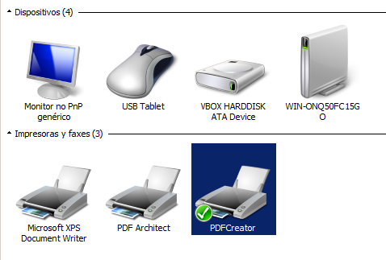Probamos a imprimir un archivo de texto para que nos lo convierta en PDF:
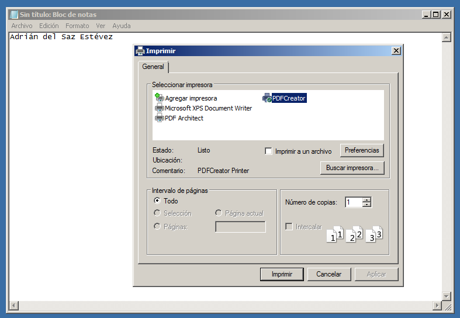El resultado será el siguiente:

Una vez tengamos lo principal, nos dispondremos a crear un dominio para conectarnos posteriormente con un cliente:
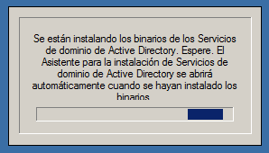Al dominio lo llamaremos pc16.com:
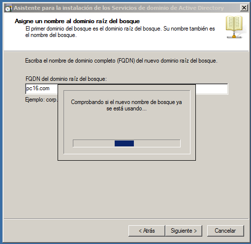Seguiremos aceptando las condiciones, en este caso colocando nuestro sistema operativo (Windows Server 2008 R2):
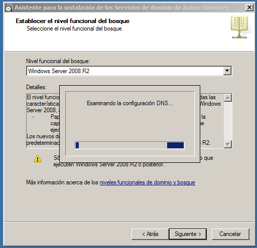Aquí podremos ver como se ha creado correctamente:
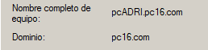Una vez hecho, en un navegador colocaremos la siguiente dirección "pcadri.pc16.com/printers" (nombreservidor.nombredominio/printers) para acceder a la cola de impresión que más adelante cuando mandemos a imprimir algo en el cliente nos aparecerá en esta página:
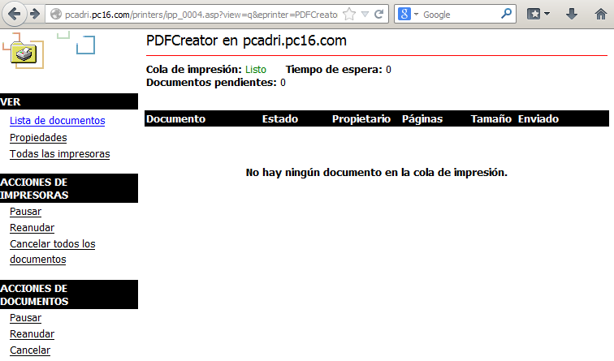Una vez configurado el cliente, lo conectaremos al dominio:
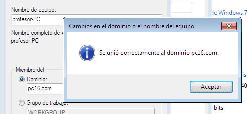Agregaremos la impresora del servidor (PDFCreator) a la lista de impresoras del cliente para que mandemos a imprimir un documento:
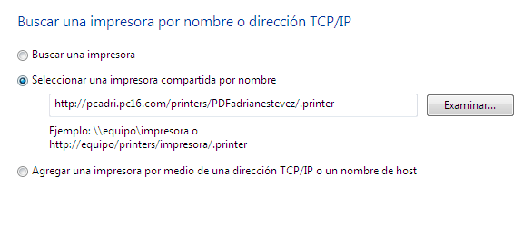Nos detectará la impresora y la seleccionaremos:
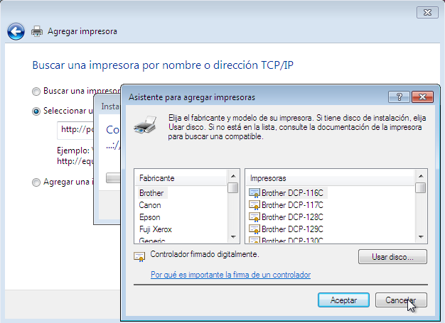Daremos click en imprimir:
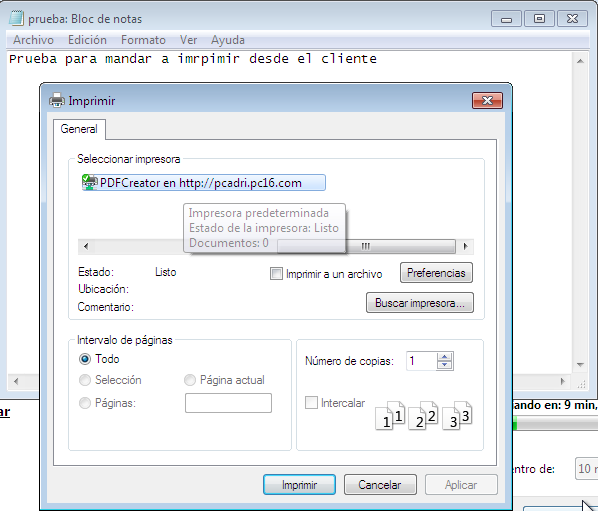Y finalmente, nos pasaremos al servidor como se muestra en la parte superior de la imagen (W2008 SERVER) y veremos en cola el documento "impreso" del cliente:
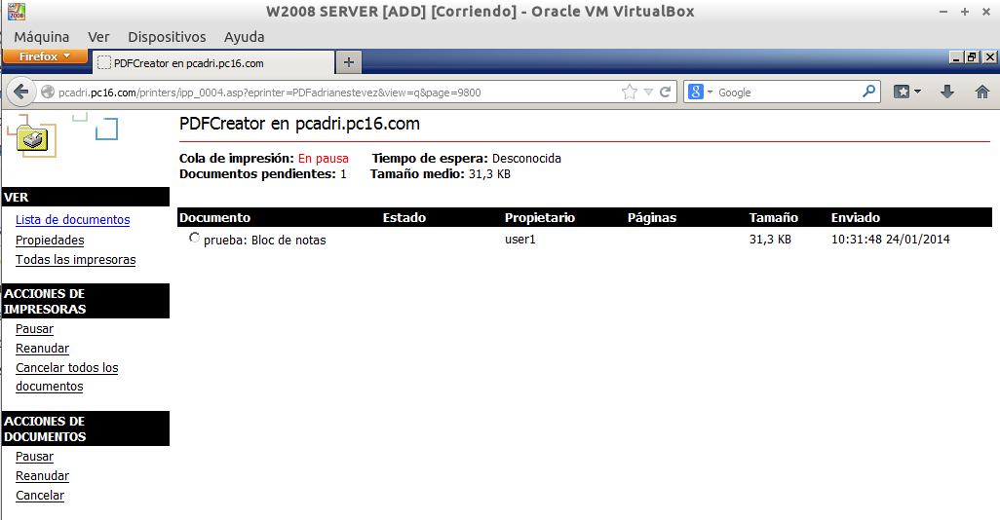Tuve problemas a la hora que el cliente me detectara la impresora creada en el servidor. Servidor y cliente se conectaron correctamente al dominio, se podian mandar pings pero, aún así, no habia manera de que detectara la impresora (PDFCreator).
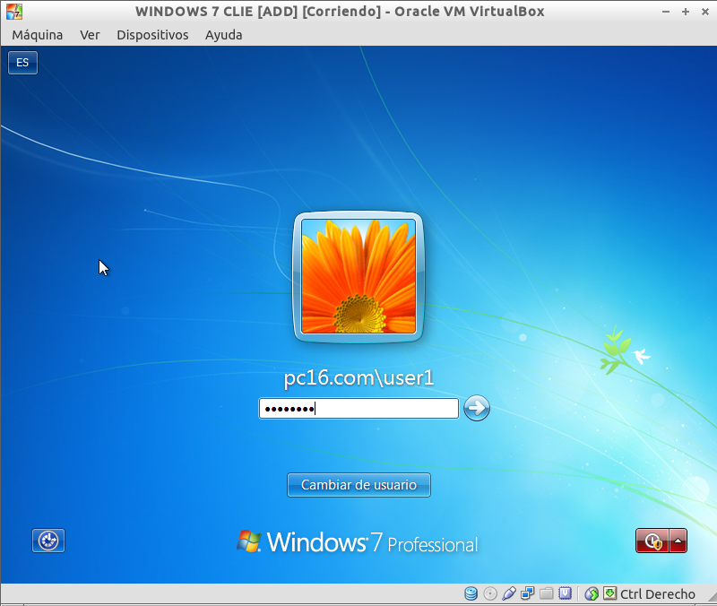Lo solucioné al día siguiente cuando, al entrar de nuevo a la práctica para continuarla, me di cuenta que no estaba con el usuario que metí en el dominio.
De resto no encontré más errores.